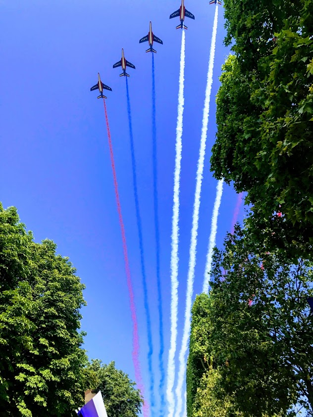
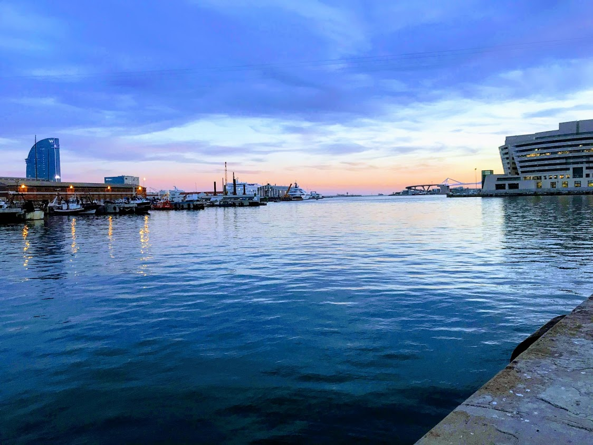
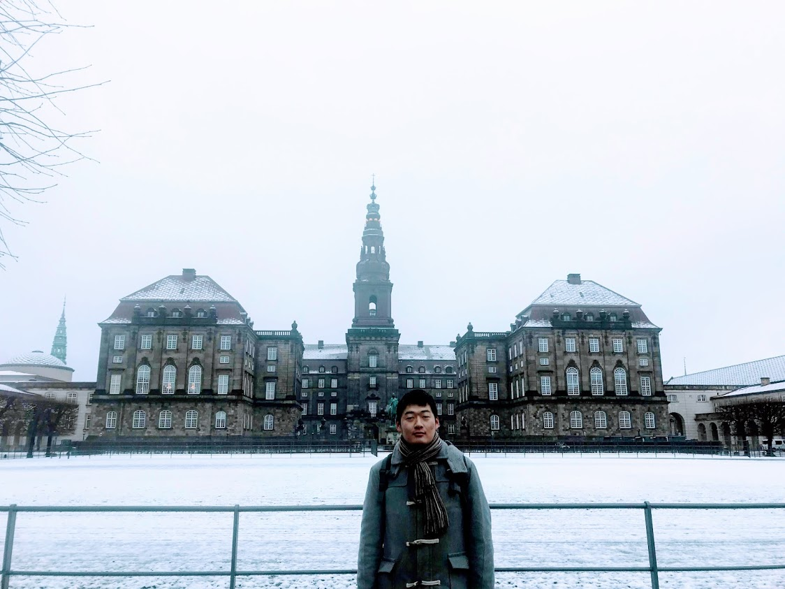

眼前的苟且
小资源
- Math: Mathtype
- Latex: swjtuThesis
- 公式神器
- 教学资料: 矩阵手册
- visio电子元件库，待补全
- 现代电力电子电路，浙大
- 下载神器: IDM
- 天籁之音: 拉德斯基进行曲
- 风姿花传（三国演义）
- 长亭送别
- 花式字体: 艺术字
- Else: Contact me（email：jiangsenhao@my.swjtu.edu.cn） if you do have some fantastic softwares or resources and would like to share with me ! I'am so glad to make acquaintance of friends with the same interests.
诗和远方
衰兰送客咸阳道，
天若有情天亦老。
——唐·李贺《金铜仙人辞汉歌》
劝君不用分明语，
语得分明出转难。
——唐·罗隐《鹦鹉》

未出土时先有节，
便凌云去也无心。
——宋·徐庭筠《咏竹》

三十功名尘与土，八千里路云和月。
莫等闲，白了少年头，空悲切。
——宋·岳飞《满江红》
我见青山多妩媚，
料青山见我应如是。
——宋·辛弃疾《贺新郎·甚矣吾衰矣》
遥知湖上一樽酒，
能忆天涯万里人。
——宋·欧阳修《春日西湖寄谢法曹韵》
时来天地皆同力，
运去英雄不自由。
——唐·罗隐《筹笔驿》

唤起一天明月，
照我满怀冰雪，
浩荡百川流。
——宋·辛弃疾《水调歌头·和马叔度游月波楼》
为天地立心，为生民立命，为往圣继绝学，为万世开太平。
——宋·张载《横渠语录》

遥襟俯畅，逸兴遄飞。
——唐·王勃《滕王阁序》
不如意事常九八，
可与言者无二三。
——宋·方岳《别子才司令》

人间自是有情痴，
此恨不关风与月。
——宋·欧阳修《玉楼春·尊前拟把归期说》